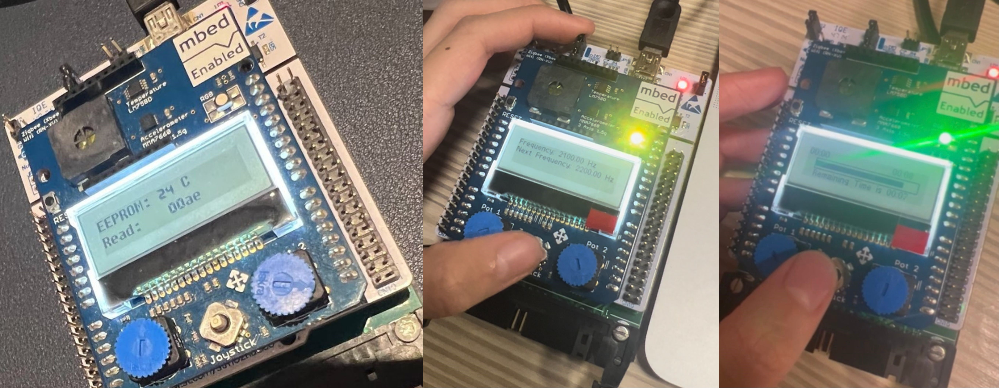

Low-Level Programming
Data Networking
C Programming STM32 Keil uVision5 Mbed Shield I2C SPI IPv4 Checksum- Programmed functionality to allow temperature to be read from temperature sensor (I2C) - joystick centre button samples temperature.
- Programmed functionality to write and read entire 80-byte temperature packet to EEPROM (Electrically Erasable Programmable Memory) using page write and read.
- Display of temperature packet fields and their values using the up-and-down joystick.
- Programmed internet protocol: 1’s complement IPv4 header checksum to check read and write packet values.
- Back up the packet with checksum (82 bytes) into the second EEPROM memory address.
MCEII Programming
C++ STM32 Mbed Library Mbed Online CompilerProgramming Coursework Score of 95%
The skills gained from programming these are carried forward to Autonomous buggy project
- Programmed interrupt-based object-orientated C++ that allows speaker component to update its frequency based on joystick inputs. The frequency of the speaker is displayed on an LCD screen.
- Interrupt-based object-orientated programming with state machines via switch-case statements. Designed a graphical interface of a progress bar that illustrates the timing countdown.
- Version control: Utilized incremental development with regular backups to safeguard working code progress.
VHDL - Hardware
VHDL Xilinx ISE 14.2 Direct Verification Testbench94% - missing another reset checker during run-time
Continuation of the skills developed in VHDL is used in my Intel work experience with another Hardware Development Language - Verilog.
- Hardware synthesis of logic gate schematics using VHDL
- Finite State Machines development and using simulation results to debug VHDL code.
- Implemented Direct Verification Testbench to perform automated testing on the ‘black box’ IP core.
- Attended optional lab: FPGA timer counter using Xilinx FPGA board.
Assembly
Digital Signal Processing
Assembly CrossCore Embedded Studio Signal Wizard for Blackfin+ ADSP-BF706 EZ-KIT- Program to handle real-time audio processing: Configure Codec and Serial port for audio transfer, denoise music audio using stopband Finite Impulse Response (FIR) filter.
- Gain adjustment on audio channels using arithmetic operations, and volume control using codec command.
- Implemented pure modulation and double sideband amplitude modulation on signals, using an oscilloscope to verify the output signals.
- Code sine-wave generation via look-up table signal generation method.
Microcontroller Engineering I
Assembly PIC18F8722 Microchip MPLABX Integrated Development Environment- Assembly programming of PIC18F8722 using special function registers.
- Peripheral configuration via Tri-state registers and Latch registers to control the state of output pins
- Looping and conditional branches to control execution flow.
- Implemented subroutines to enable different time delays and repetitive tasks.
- Bitwise operations - to manipulate bits in registers for assembly programming for certain LEDs to light up.